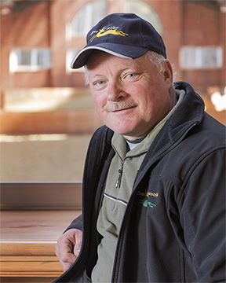

Our Professionals
Megan Lane
Trainer
 Deer Ridge Equestrian's trainer Megan Lane has been a recognized FEI competitor for over a decade. Megan has earned numerous international titles including 8 medals at the North American Young Rider Championships. At the age of 20 Megan began competition in the FEI Grand Prix with her KWPN mare Caravella. Megan represented Canada during the World Equestrian Games in Normandy, France in 2014. Winters are spent in Wellington Florida, training and competing at the Global Dressage Festival.
Deer Ridge Equestrian's trainer Megan Lane has been a recognized FEI competitor for over a decade. Megan has earned numerous international titles including 8 medals at the North American Young Rider Championships. At the age of 20 Megan began competition in the FEI Grand Prix with her KWPN mare Caravella. Megan represented Canada during the World Equestrian Games in Normandy, France in 2014. Winters are spent in Wellington Florida, training and competing at the Global Dressage Festival.
Natalie Brinda
Manager
Natalie is responsible for overseeing the daily operations of the property and stables at Deer Ridge. She joined the Deer Ridge team in 2010 after choosing to transition from the horse racing industry. Natalie spent 8 years as an Assistant trainer travelling extensively with top North American thoroughbred racing stables. Natalie's passion for horses started at the young age of 8, when she began taking lessons at a local stable in Niagara Falls, ON. She spent her early years showing on the local hunter circuits and eventually moved up to the A circuit under the tutelage of Forest Hill Farm. Natalie mostly enjoyed taking thoroughbreds off of the racetrack and preparing them for a new career. Natalie believes that happy horses perform best. It is her goal to create a relaxed and fun environment where the horses can thrive and maintain their competitive edge.
Marnie Newbery
Senior Groom/ Assistant Supervisor
 Marnie joined the DR team in the fall of 2012.Marnie brings 25 years of hands on equine experience ranging from thoroughbred breeding sheds to Jumpers and ponies. Marnie has extensive knowledge of breeding and foaling and is excellent with youngsters. She brings a wealth of knowledge for detailed horse care and is a key player in the day-to-day organization of the barn. In her free time Marnie enjoys western riding, swimming and home renovations.
Marnie joined the DR team in the fall of 2012.Marnie brings 25 years of hands on equine experience ranging from thoroughbred breeding sheds to Jumpers and ponies. Marnie has extensive knowledge of breeding and foaling and is excellent with youngsters. She brings a wealth of knowledge for detailed horse care and is a key player in the day-to-day organization of the barn. In her free time Marnie enjoys western riding, swimming and home renovations.
John Mackay
Property Maintenance
John has been at Deer Ridge since 2008. He offers a variety of skills and is always keen to lend a helping hand. John is responsible for the care and upkeep for a large collection of exotic birds, which he takes great pride in. If John is not tending to the aviary he can often be found tending to the forests, the ponds, cutting grass or working on any one of our current projects. John is a corner stone of the Deer Ridge team. John is a avid fisherman and enjoys spending his leisure time with his grandchildren.